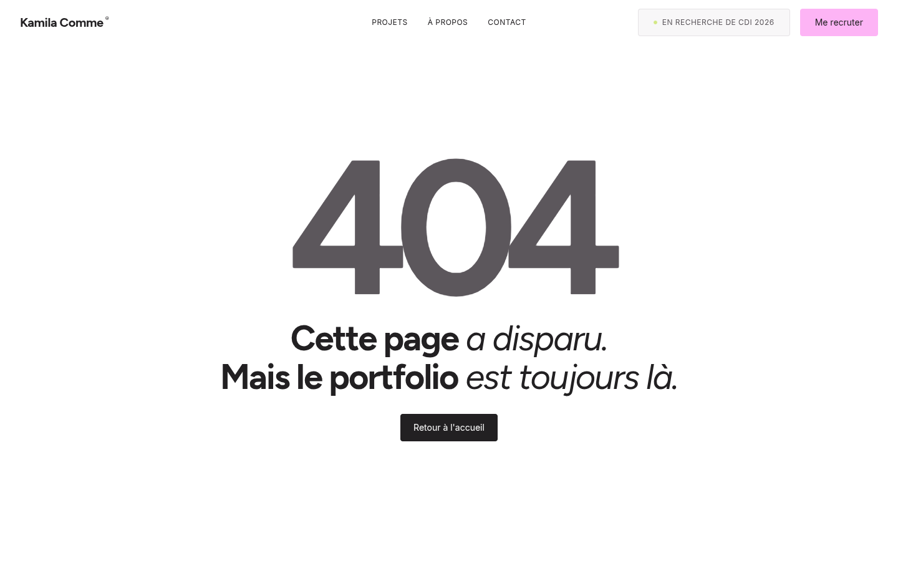
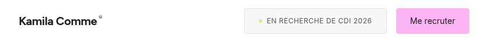
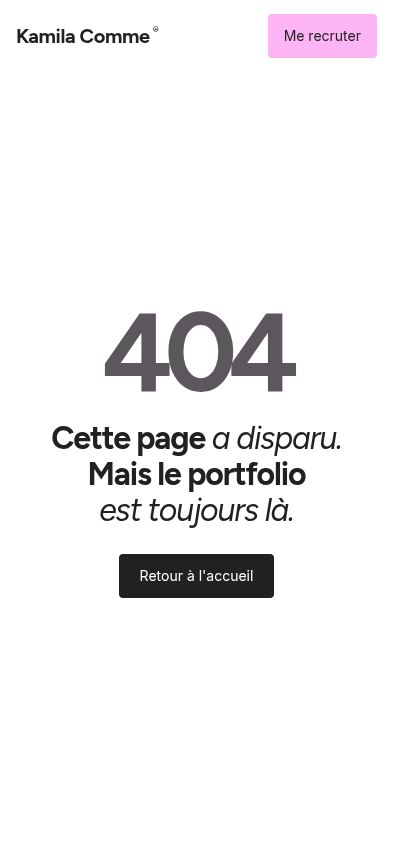
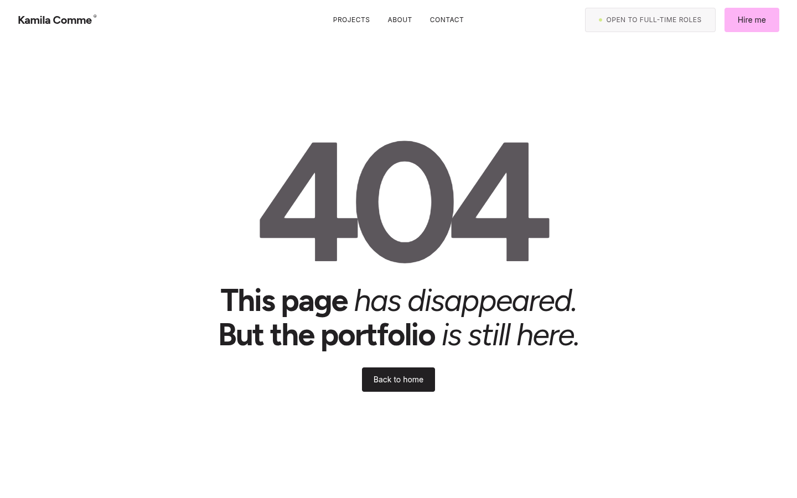
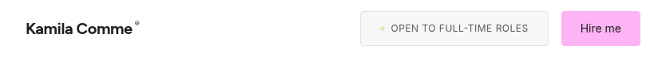
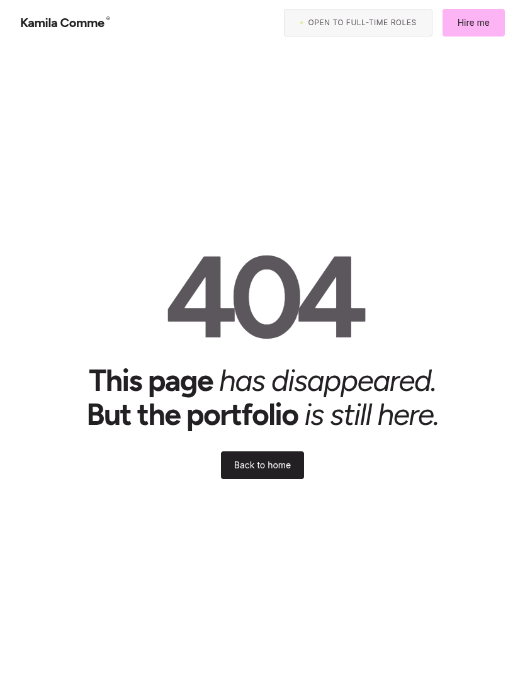
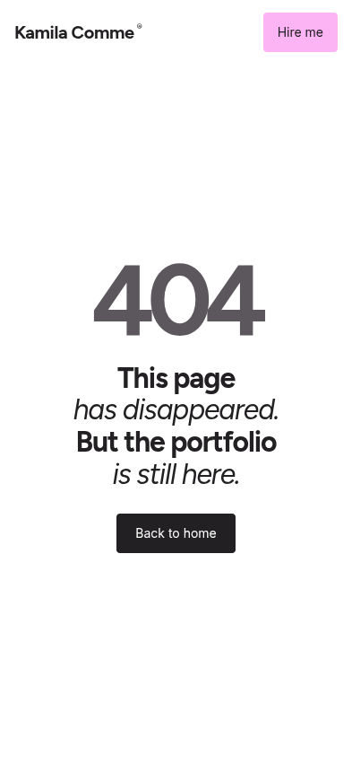
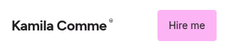
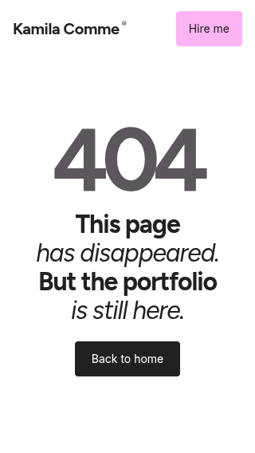

404 page review · shared Navbar + responsive typography
Chromium captures compare the previous homepage Navbar, the homepage after extraction, and the 404 page at identical viewport sizes. Desktop links stay centered; tablet/mobile simplification matches the homepage. Open an image to inspect it at full capture size. The 404 screenshots use actual missing URLs returning HTTP 404.
Source: templates/partials/navbar.html, included by both templates in the deterministic build. 404 color overrides are local and it loads no PortfolioController or homepage animation runtime.
Français · Bureau · 1440×900
Full 404 page

Français · Tablette portrait · 834×1112
Old homepageHomepage · shared partial404 · shared partial
Full 404 page
Français · Mobile · 393×852
Full 404 page

Français · Mobile étroit · 320×568
Full 404 page
English · Desktop · 1440×900
Full 404 page

English · Tablet portrait · 834×1112
Old homepageHomepage · shared partial404 · shared partial
Full 404 page

English · Mobile · 393×852
Full 404 page

English · Narrow mobile · 320×568
Old homepageHomepage · shared partial404 · shared partial
Full 404 page

Measured typography and routes
| Language | Viewport | HTTP | Message | 404 numeral | Home href | Button | Overflow | Old → shared homepage nav |
|---|
| FR | 1440×900 | 404 | 56px | 306px | / | 14px; 44px | none | identical |
| FR | 834×1112 | 404 | 48px | 183.48px | / | 14px; 44px | none | identical |
| FR | 393×852 | 404 | 32px | 112px | / | 14px; 44px | none | identical |
| FR | 320×568 | 404 | 32px | 112px | / | 14px; 44px | none | identical |
| EN | 1440×900 | 404 | 56px | 306px | /en/ | 14px; 44px | none | identical |
| EN | 834×1112 | 404 | 48px | 183.48px | /en/ | 14px; 44px | none | identical |
| EN | 393×852 | 404 | 32px | 112px | /en/ | 14px; 44px | none | identical |
| EN | 320×568 | 404 | 32px | 112px | /en/ | 14px; 44px | none | identical |
Full element bounds, Navbar geometry, accessible-label observations: measurements.json.
GitHub Pages behavior
The local preview server reproduces GitHub Pages' custom not-found contract: existing files return normally; unknown paths return the 404.html body with HTTP status 404 and preserve the requested URL. English copy is selected for /en/. No redirect occurs.